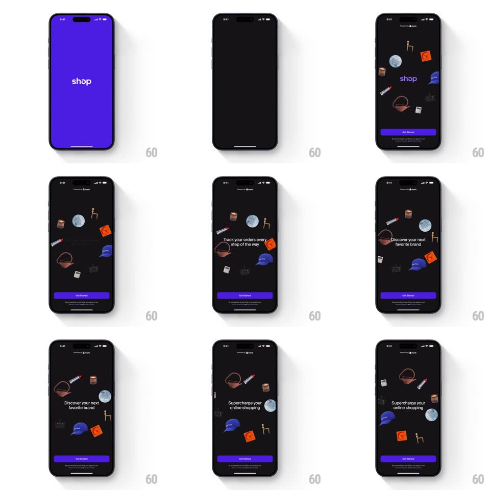

Media
Frame-by-frame

Rebuild this interaction 1:1: Shop's onboarding splash - the purple "shop" logo screen dissolves into a dark constellation of floating product illustrations (chair, disco ball, bag, lipstick, cap, camera) orbiting slowly while rotating value-prop headlines swap in the center.

Rebuild this interaction 1:1: Shop's onboarding splash - the purple "shop" logo screen dissolves into a dark constellation of floating product illustrations (chair, disco ball, bag, lipstick, cap, camera) orbiting slowly while rotating value-prop headlines swap in the center. ## Integration Integration: stack-agnostic spec - springs given as stiffness/damping, timed motions as duration + curve; map every value to your framework and animation library of choice. ## Scene Opens on a solid purple splash with the white "shop" wordmark. Main scene: black background, ~8 small product illustrations scattered in a loose ring, the wordmark (then headlines like "Track your orders every step of the way", "Discover your next favorite brand", "Supercharge your online shopping") centered, a purple "Get Started" button and legal fine print pinned bottom. ## Motion spec Pattern: logo dissolve into orbiting product constellation. - The purple splash holds 1s, then the wordmark shrinks slightly and the background crossfades to black (500ms) as the product illustrations pop in one by one (scale 0 -> 1, spring ~340/18, 90ms apart, random order). - The constellation drifts: each item orbits the center slowly (30-50s per revolution, each with its own radius and phase) with a gentle independent bob (+-6px, 3-5s sine). - Center copy rotates every ~3s: the wordmark fades out and each headline fades/slides in (12px rise, 400ms, 250ms out), cycling through the value props. - Get Started stays constant; it pulses once (scale 1.03) on entry only. ## Calibration - Products never overlap the center text - orbit radii keep a clear core. - Motion is all ambient and seamless; nothing snaps at loop points. ## Reduced motion Static constellation; headlines crossfade. ## Don't miss - Each illustration has its own speed - uniform rotation would read as a ferris wheel, not a constellation. - The purple from the splash survives only in the button - a deliberate thread through the scene change.